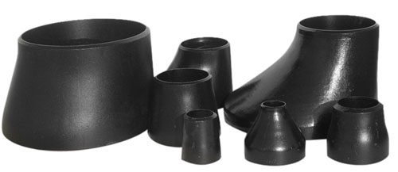

This is a whirlwind tour of some of the cool new features that appeared in Clojure in the past few years. I find it fascinating how one good idea (reducers) morphed into another (transducers), and ended up mating with yet another, apparently unrelated concept (concurrent pipelines) to produce some really powerful coding abstractions.
The article is not for beginners; otherwise it'd take a small book to cover all this material. Some experience with Clojure or a similar functional language is required.
Sequences, iterators and laziness
Let's start with the basics. Suppose we want to iterate over a sequence of items, performing some combination of transforming and filtering on the items in it. Here's an example:
=> (def s (range 0 10))
#'simplerepl.core/s
=> (reduce + (map inc (filter even? s)))
25
It's very simple, but our imagination and experience tell us that it is representative of many real data processing pipelines. Mapping, filtering and reducing is the bread and butter of functional programming, after all. However, our eternal concern with efficiency should sound the sirens here; it seems like we take a sequence and pull it through several operations that need the whole sequence to operate. Are there copies involved? The way the Clojure code is written above, the answer is no - because of laziness.
range returns a lazy sequence - a sequence whose members are not really materialized until we try to use them. Further, Clojure's functional primitives like map and filter respect laziness by not materializing more than they need for any given step (sans a bit of chunking/buffering for efficiency).
In other words, the code above does not create intermediate sequences between steps. It creates lazy sequences, which are just thunks holding a function to materialize the next item.
Python has iterators for the same purpose. When writing a function to generate a sequence of items in modern Python, returning a list is discouraged because this may incur unnecessary copying. Rather, such functions ought to return iterators (which is very easy using yield). Moreover, functions consuming sequences should be careful about not materializing the whole sequence but rather using elementwise iteration (which is the default in for...in loops). Python 3 made this style prevalent by switching range to return an iterable; same for map. In Python 2 both range and map return fully materialized lists.
In an imperative programming style, we'd probably have a loop to perform the operation shown above:
def process(s):
result = 0
for i in s:
if i % 2 == 0:
result += i + 1
return result
It's easy to reason about the efficiency of this code, but it's also structured in a less modular way. A composition of maps, filters and reductions could be easier to reason about because it maps well to the actual business logic of our application. The imperative implementation does not compose as well.
Reducers
Alright, so laziness ensures that Clojure code as shown above is not as inefficient as we may have feared. But still, is it as efficient as an imperative implementation? It turns out the answer is no; while laziness avoids large copying costs, it does incur a constant overhead for boxing and unboxing thunks representing the rest of the sequence; it would be nice to avoid these costs as well. This brings us to reducers.
Expressing data transformation with reducers starts with the observation that reduce is a fundamental building block that can express other transformations fairly easily. Here's how we can perform the job of a map with reduce:
=> (reduce (fn [acc item] (conj acc (inc item))) [] [1 2 3 4 5])
[2 3 4 5 6]
filter is only slightly trickier:
=> (reduce (fn [acc item] (if (even? item)
#_=> (conj acc item)
#_=> acc))
#_=> [] [1 2 3 4 5])
[2 4]
This is cool, but note something slightly disturbing. This code will work fine only on collections for which conj works well; it will blow up on lists. Also, we've just spent time talking about not building temporary collections in between transformations, but this exactly what this code is doing with that conj.
The clojure.core.reducers library solves both these problems by conceptually inverting the process of applying multiple transformations to a sequence inside-out. Reducers are now integrated into Clojure core, but it's worth spending a few minutes getting an intuitive feel for how they work by implementing a simplistic variant. For the full scoop, read Rich Hickey's article. Here's an abridged version.
We start by defining a "reducing function". A reducing function is what reduce takes - a function accepting an accumulator and a new item, and returning the new accumulator value. In classical reductions this function can just be +; in the sense of implementing-map-with-a-reduce, it can be as shown above. In pseudo-type-notation, it's something like [1]:
reducingf :: acc -> item -> acc
Next, let's define the concept of "transforming" a reducing function. This is simply a function that takes a reducing function and returns another reducing function:
transformingf :: (acc -> item -> acc) -> (acc -> item -> acc)
The main insight is that we can express all kinds of data transformations simply by transforming a reducing function. In the end we'll end up with a single reducing function that can be passed to reduce.
Here's another take at representing map with reduce, this time using the generalized approach described above:
(defn mapping-transform
[mapf]
(fn [reducingf]
(fn [acc item]
(reducingf acc (mapf item)))))
It may look scary, but it's just an code embodiment of the textual description above. A call to mapping-transform will create a function that transforms a reducing function into another reducing function. The actual parameter passed to mapping-transform is used to modify every item in the collection before that item is passed to the original reducing function. Here's how we can use this to compute a sum of squares for a given vector:
reducers.core=> (reduce ((mapping-transform #(* % %)) +) 0 [1 2 3 4 5 6])
91
There's nothing more magical than some higher-order function munging going on here. (mapping-transform #(* % %)) returns a function that takes a reducing function as argument, and returns another reducing function. Since the actual reduction we want to perform is +, this is what we pass in [2]. The returned reducing function is then given to reduce. Take a couple of minutes to convince yourself how this works. It may help tracing the + in the REPL:
reducers.core=> (trace-vars +)
#'clojure.core/+
reducers.core=> (reduce ((mapping-transform #(* % %)) +) 0 [1 2 3 4 5 6])
TRACE t8399: (clojure.core/+ 1 4)
TRACE t8399: => 5
TRACE t8400: (clojure.core/+ 5 9)
TRACE t8400: => 14
TRACE t8401: (clojure.core/+ 14 16)
TRACE t8401: => 30
TRACE t8402: (clojure.core/+ 30 25)
TRACE t8402: => 55
TRACE t8403: (clojure.core/+ 55 36)
TRACE t8403: => 91
91
Question: how many times do we process each item in the input vector? Note that we do two data transformation operations:
- Map the square function #(* % %) over each item.
- Sum all squared items together.
However, this code only walks over the input sequence once. What happens here is that, instead of generating a new lazy thunk after each step, we combine all steps into a single traversal. This combination is achieved via a composition of functions orchestrated by mapping-transform. We can take this approach further, and define a filtering-transform:
(defn filtering-transform
[predicate]
(fn [reducingf]
(fn [acc item]
(if (predicate item)
(reducingf acc item)
acc))))
Here's how we sum up the all the even numbers in a vector:
reducers.core=> (reduce ((filtering-transform even?) +) 0 [1 2 3 4 5 6])
12
Now it's time to go back to the first example we started the article with. Let's take all the even numbers in a sequence, increment them and sum them up, using the higher-order reducing transforms. Here goes:
reducers.core=> (reduce ((filtering-transform even?)
#_=> ((mapping-transform inc) +)) 0 (range 0 10))
25
Remember the mention of inverting the transformation process inside-out? The order of transformations is inverted from the usual Clojure function application order. We first filter the evens, then increment, then add them all up. The "standard" Clojure code is:
(reduce + (map inc (filter even? s)))
But we've flipped it with even? on the outside and + on the inside (with inc still in-between), due to the way our mapping-transform and filtering-transform are defined. The order doesn't really matter, and the actual Clojure reducers library lets us write it in the more expected order, as we will soon see [3].
What really matters is that this approach only walks the input sequence once, without any temporary sequences or lazy thunks in the interim. It really is similar to the imperative-style loop [4].
Is it faster in practice?
Let's leave this explanatory framework behind and just use clojure.core.reducers that exports its own versions of map and filter, which are designed to be passed to reduce. These functions do essentially the same thing as the trick explained above, but with a bit more sophistication so that invoking them looks exactly like invoking the built-in map and filter.
To use them in the REPL, we'll first require the module:
reducers.core=> (require '[clojure.core.reducers :as r])
nil
Now we can distinguish between the built-in map and the transforming r/map. Here is a benchmark that compares this new way of transforming collections [5]:
reducers.core=> (def s (range 0 9999999))
#'reducers.core/s
reducers.core=> (time (reduce + 0 (map inc (filter even? s))))
"Elapsed time: 599.985027 msecs"
25000000000000
reducers.core=> (time (reduce + 0 (r/map inc (r/filter even? s))))
"Elapsed time: 432.453733 msecs"
25000000000000
The reducers version is quite a bit faster. As an excercise, try to make the transforming chain longer by adding several more mapping and filtering steps. How does it affect the performance difference?
Great, so we can speed up our data processing with this one weird trick. However, if you have some experience in working on compiler backends, you may be feeling underwhelmed. Isn't this just loop fusion? Indeed, it is. Our original code had multiple loops going over the same data; but we could just fuse all the operations done on every element into a single loop. Indeed, this is what the imperative code in the beginning of the article does.
I suspect that Clojure is too dynamic and there are too many layers of abstraction (such as laziness, sequences, etc) to expect a perfect automatic loop fusion from the JVM here. This is why we resort to fusing the loops manually; well, not really manually - we actually use some higher-order function goodness to accomplish this for us. If you squint hard at the mapping-transform function above, you may notice that it fuses the mapping function into the reducing function.
All of this makes me wonder - what if we really fuse the loops manually, can we go even faster? It turns out yes, but only for some types of sequences. Let's start by changing the s in the benchmark to a materialized vector (range actually produces a lazy sequence):
reducers.core=> (def sv (vec s))
#'reducers.core/sv
And now let's re-run the benchmark of regular filter-map-reduce with the reducers-infused filter-map-reduce:
reducers.core=> (time (reduce + 0 (map inc (filter even? sv))))
"Elapsed time: 555.125033 msecs"
25000000000000
reducers.core=> (time (reduce + 0 (r/map inc (r/filter even? sv))))
"Elapsed time: 371.145887 msecs"
25000000000000
But now let's add another contender - a manually fused reducing function that combines the addition, filtering and increment mapping:
reducers.core=> (time (reduce (fn [acc item] (if (even? item)
(+ acc (inc item))
acc))
0 sv))
"Elapsed time: 324.793784 msecs"
25000000000000
Hah, even faster! Of course, writing such pipelines manually is not always practical, isn't composable and quickly gets unreadable, so in most cases using reducers is preferred. But that's not all. Reducers have another trick in the sleeve - effortless parallelism.
Folding in parallel
Let's begin this section right with the punchline:
reducers.core=> (time (r/fold + (r/map inc (r/filter even? sv))))
"Elapsed time: 145.529636 msecs"
25000000000000
Whoa, what happened? Given an appropriate collection (such as a vector) that is foldable, and an appropriate reducing function that is associative, we can actually perform a reduction in parallel on multiple cores. The trick is breaking the input sequence into chunks, reducing each chunk and then reducing the results of the chunks. For foldable collections and associative reducing functions this is mathematically equivalent to the original task; and the big win is that we can reduce separate chunk in parallel, on different CPU cores. Which is exactly what r/fold does for us, automatically. Even though the operation done on each item is trivial, r/fold generates a 2x speedup on an 8-core CPU. For longer operations, the speedup could be even better.
How awesome is that? We barely changed the code and get a considerably better performance, leveraging parallelism. All of this is possible due to the abstraction created by the reducers library. Remember the part about decoupling the actual collection from the operations to reduce it? This comes useful here.
Transducers
Remember our discussion of transforming reducing functions above? A transforming function (such as mapping-transform) has the pseudo-type:
transformingf :: (acc -> item -> acc) -> (acc -> item -> acc)
It takes a reducing function and returns another reducing function. We've just seen how this concept is used in the reducers library to decouple the transformation from the actual process of reduction.
Shortly after introducing reducers, the designers of Clojure had another insight. Such transforming functions are useful not just in the context of reductions. The Clojure core developers were designing utility functions for core.async to transform channels (more on this later), and found themselves rewriting a bunch of existing logic from existing mapping and transforming functions. The solution? Use the concept of transforming functions to define sequence transformations in a more abstract way, completely decoupling them from the underlying sequences.
So transforming functions got a new name - transducers, and got integrated more tightly into the language. Now many of the built-in sequence processing like map have an additional arity where no sequence is actually passed in. (map inc), for example, simply returns a transducer - a transforming function for other reducers. These transducers are composable, so another way to write the non-parallel reduction we've been using in the benchmarks is:
(reduce ((comp (filter even?) (map inc)) +) 0 sv)
Note that the order here is similar to the one we had to apply with our own filtering-transform and mapping-transform, to convey that we first filter and then map (it's also similar to the Clojure -> macro).
Aimed with the insights of this article, we can actually look under the hood of Clojure's built-in map:
(defn map
([f]
(fn [rf]
(fn
([] (rf))
([result] (rf result))
([result input]
(rf result (f input)))
([result input & inputs]
(rf result (apply f input inputs))))))
([f coll]
;; Implementation of other, non-transducer arities.
;; ...
To be a true transducer, a Clojure function must have three arities. I'll skip the no-argument and single-argument versions (please read a more comprehensive reference on transducers for the full scoop). The 2-arity version is where the real meat is and, oh wait, it's exactly the same as our mapping-transform from this article!
So OK, now "functions that transform reducing functions" have a shorter name - transducers; but what has actually changed?
What's really changed is that the map transducer has a wider range of applicability than just mapping collections. Its implementation has no collection-specific code. Let's see how it can be used to transform communication channels.
Pipelines and transducers
Clojure has borrowed go-routines and channels from Go, and placed them in a standard libray module named core.async. Unfortunately, a thorough discussion of core.async is outside the scope of this article. I'll just say that core.async is awesome; that it was implemented as a library without changing the language is beyond awesome - it's a terrific example of the power of Lisps to grow the language towards the problem domain.
That said, I do want to mention core.async in the context of transducers, since the two mix in an interesting way.
Let's take the simple squaring pipeline from Go concurrency patterns and rewrite it in Clojure. The first version is a pretty-much verbatim transcription:
(defn gen-1
[& nums]
(let [c (async/chan)]
(async/go
(doseq [n nums]
(async/>! c n))
(async/close! c))
c))
(defn sq-1
[cin]
(let [cout (async/chan)]
(async/go-loop [n (async/<! cin)]
(if n
(do
(async/>! cout (* n n))
(recur (async/<! cin)))
(async/close! cout)))
cout))
(defn main-1
[]
(let [c-gen (gen-1 2 3 4 5)
c-sq (sq-1 c-gen)]
(loop [n (async/<!! c-sq)]
(when n
(println n)
(recur (async/<!! c-sq))))))
There are two pipeline stages; the first, gen-1 generates a sequence of numbers into a channel. The second, sq-1 takes a channel of inputs, transforms them (by squaring each number) and puts the results in another channel. main-1 connects the two pipeline stages together.
The second version makes more use of higher-level core.async tools:
(defn gen-2
[& nums]
(async/to-chan nums))
(defn sq-2
[cin]
(async/map< #(* % %) cin))
(defn main-2
[]
(let [c-gen (gen-2 2 3 4 5)
c-sq (sq-2 c-gen)]
(loop [n (async/<!! c-sq)]
(when n
(println n)
(recur (async/<!! c-sq))))))
In gen-2, to-chan places its input collection into a channel, and closes the channel; all of this in a separate go-block, of course. sq-2 uses the map< function to create a mapping channel which takes items from its input channel, maps some function on them and returns a channel of results.
If you read the documentation of core.async, you'll notice that map< is now deprecated and you're advised to "use transducers instead". Let's see how to do that, in this third version:
(defn main-3
[]
(let [c-sq (async/chan 1 (map #(* % %)))]
(async/onto-chan c-sq [2 3 4 5])
(loop [n (async/<!! c-sq)]
(when n
(println n)
(recur (async/<!! c-sq))))))
Here we create a single channel named c-sq, with a mapping transducer. This means that every item going through the channel gets transformed with the given mapping function before being read out of the channel. We don't need a separate channel, and core.async doesn't need a separate mapping helper.
In fact, with the introduction of transducers core.async deprecated a whole bunch of functions. map<, filter<, unique, partition and so on. While implementing these for channels, the Clojure core devs had the epiphany that they're basically reimplementing all sequence processing functions in a different context [6]. Transducers is an elegant solution to abstract away the concept of transformation from the underlying context (be it collections or channels, or...)
It's easy to compose transducers on channels. Here's a silly example:
(defn square [x] (* x x))
(def xform
(comp
(filter even?)
(filter #(< % 10))
(map square)
(map inc)))
(def c (async/chan 1 xform))
(async/go
(async/onto-chan c [5 6 8 12 15]))
(loop [n (async/<!! c)]
(when n
(println n)
(recur (async/<!! c))))
Here the transducer is more complex, applying several filtering and mapping steps on the items going through the channel. That said, as we've seen earlier in the article this is actually pretty efficient, with no unnecessary copying involved.
Closing thoughts - on the generality of reducing functions
It's interesting to ponder how reducing functions, from the humble beginning of the workhorse of reduce, became the most important building block of the concepts discussed in this article. Recall that a reducing function has the type:
reducingf :: acc -> item -> acc
I think the key insight is that taking and returning the new combined value permits a reducing function to implement things like filtering, because we can convey the concept of including or not including the current item in the combined result. Clojure's reductions also support the reduced call for early termination, and keeping state between reductions can help implement more involved processing steps. For a fairly complete example of all these tools, take a look at the implementation of the transducer variant of take in the Clojure core library sources.
The code snippets shown throughout the article are available on GitHub.
| [1] | This is a Haskell-y type notation. x -> y -> z means a function taking a parameter of type x and a parameter of type y and returning a value of type z. (x -> y) -> z means we take one parameter of type "function taking x and returning y) and return a value of type z. |
| [2] | Execrise: modify this code to produce a new vector of squares, instead of summing them up. Your solution will still use reduce. |
| [3] | The actual reducers library cleverly uses Clojure protocols to make this process even more abstract and let sequences decide the best way to reduce them. It's worth checking out, though there's quite a bit of added complexity that obscures away the main point I want to make in this article. |
| [4] | We have to give up laziness though, since Clojure's reduce is inherently eager. It implements left-folding rather than right-folding, so it can't be run on infinite sequences. This is usually not a very big deal; while infinite sequences are a nice abstraction in some cases, most of the real data processing tasks we have are, luckily, finite. |
| [5] | Benchmarking in Clojure is tricky since the JVM needs some warmup for the heavy-handed JIT to kick-in, so it's worth rerunning such benchmarks several times and collecting the fastest runtime. The numbers shown here are representative of the results obtained on my machine. |
| [6] | There's a small caveat here to be aware of, IMHO. Pipelines as demonstrated in the Go article linked here aren't only useful to decouple the different steps. They are also useful to actually parallelize them. Squaring is a toy example, but imagine this step in the pipeline was time consuming. Then the go-routines running the generating step (or some other pipeline step) could actually run in parallel with the squaring step. When we use transducers as shown here, this flexibility goes away. |